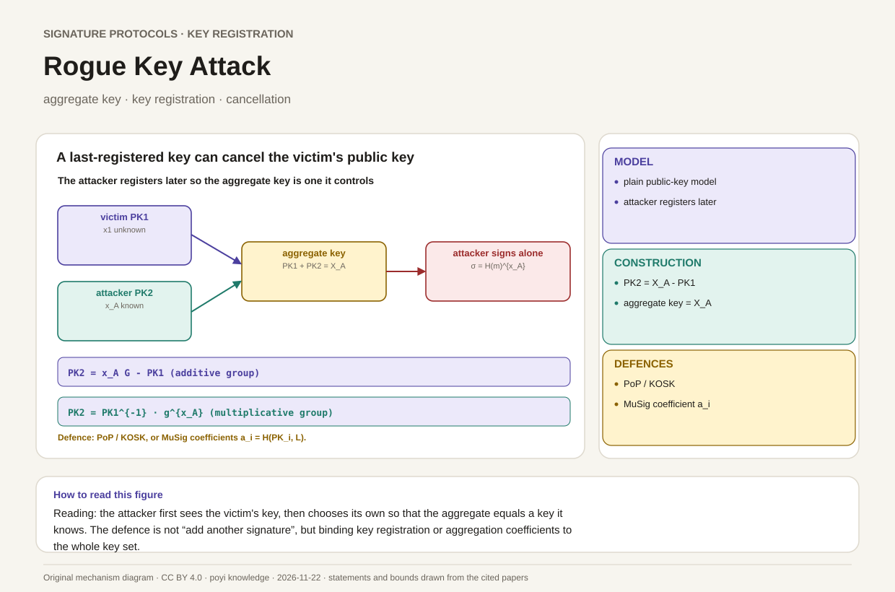
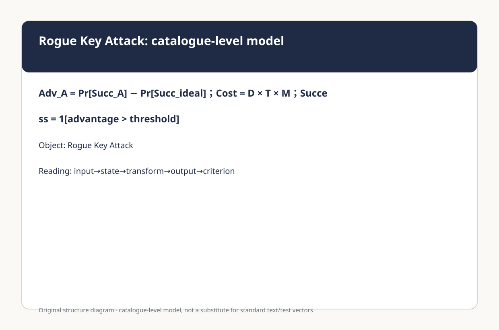

Principles
Attack: Rogue Key Attack (流氓密钥攻击). ### Simple addition of aggregate public keys
Many multisignature or aggregate-signature schemes combine signer public keys by simple arithmetic:
PK = PK_1 + PK_2 + … + PK_n in an additive group,
or PK = PK_1 · PK_2 · … · PK_n in the multiplicative group used by BLS. The verifier only checks whether the aggregate signature σ is valid under the aggregate public key PK. If key registration does not require proof of possession of the private key, a last-joining attacker can choose its public key so that the aggregate key equals a key it controls. ### The simplest two-party construction
Let the victim’s public key be PK_1 = x_1 G in an additive group, or g^{x_1} in a multiplicative group, and let the attacker control x_A. In the multiplicative group it registers
PK_2 = PK_1^{-1} · g^{x_A},
so PK_1 · PK_2 = g^{x_A}. The attacker knows x_A and can produce an aggregate signature σ = H(m)^{x_A} on any message by itself. The verifier checks it under the aggregate key and sees “both signed”, although the victim never participated. In an additive group the same cancellation is written as
PK_2 = x_A G - PK_1, so PK_1 + PK_2 = x_A G. ### The attack lives in key registration, not inside the signature scheme
This is not a forgery of a single BLS or Schnorr signature. It is a key-setup flaw of a multisignature protocol in the “plain public-key model”. The attacker must be able to register its key after seeing the victim’s key; if the key set is fixed before the attack, or registration requires proof of possession, the conditions change.

Why it matters
The selling point of a multisignature is that the aggregate behaves like one ordinary public key and signature; that makes key registration a security boundary. As long as the aggregation function treats every public key equally, an attacker can cancel or replace another signer’s contribution with a key of its choice. Several early multisignature schemes fell to such attacks, which is why Bellare-Neven 2006 formalised the “plain public-key model”: a signer only needs a public key, without proving knowledge of the private key at registration; but the scheme itself must be provably secure in that model.
- Proof of possession (PoP): registration requires a signature on a challenge under the key being registered, proving knowledge of the private key. This changes “choose any key” into “must know the matching secret key”, but not every implementation is sufficient; Bellare-Neven note that the “proof” required by some KOSK models is stronger than a PKCS#10 self-signature. 2. Key-aggregation coefficients: MuSig sets a_i = H(PK_i, L) and aggregates as Σ a_i PK_i. The coefficients depend on the whole key list, so the attacker can no longer cancel PK_1 with a simple PK_2; but the coefficient design itself needs a security proof. Adding an arbitrary hash is not a proof.
Bellare-Neven’s MS-BN is provably secure in the plain public-key model, so “PoP is mandatory” is not a general theorem. The correct statement is narrower: simple coefficient-free aggregation combined with PoP-free key registration is exposed; a specific scheme must be judged by its security proof.
Applications
- List every signer public key and determine whether aggregation is simple addition/multiplication or coefficient-based. 2. Check whether key registration requires proof of possession, and whether the proof binds identity, public key and protocol context. 3. Try to register an adversarial key computed from the victim’s key and check whether the aggregate key becomes a key the attacker controls. 4. Check whether verification uses only the aggregate key, or also requires every partial signature. 5. For BLS aggregation, confirm whether proof of possession or coefficient-based aggregation is used; for Schnorr multisignatures, confirm whether MuSig-style coefficients are used.
Exchange multisigs, cross-chain bridges, validator aggregate signatures and wallet multisigs all aggregate keys. Treating a multisignature as “several ordinary signatures stapled together” is the quickest way to miss key registration; audit it as a separate attack surface.

Limits & attacks
- The attacker cannot register its key after the victim’s key; the key set is fixed in advance or registration order is controlled. 2. Registration requires a real proof of possession, and the proof cannot be replayed or transferred. 3. Aggregation uses coefficients bound to the whole key list, so simple cancellation fails. 4. The scheme has a security proof in the plain public-key model; “it uses BLS” is not enough. 5. Verification requires every partial signature and the aggregate key cannot be replaced by one key. 6. The attacker does not know x_A, or cannot make the aggregate key equal a known key; the construction fails.
“A rogue-key attack means BLS is broken” is false; it breaks the key aggregation or registration method. “Adding PoP solves everything” is also false; the PoP implementation, binding and model must all be correct.
History
Key-setup attacks recurred in the early multisignature literature. Bellare and Neven formalised the plain public-key model at CCS 2006 and gave the MS-BN scheme, provably secure in that model. The paper is explicit that rogue-key attacks are a real threat, not a theoretical curiosity.
In 2018, Maxwell, Poelstra, Seurin and Wuille introduced MuSig, using key-aggregation coefficients to build a provably secure Schnorr multisignature in the plain public-key model, with applications to Bitcoin. Since then, “simple aggregation without PoP” has been treated as a high-risk configuration, and key registration plus coefficient design have become standard review items.
Worked example & verification
Formal model and reproduction steps
[\mathrm{Adv}^{\mathrm{attack}}_A(\lambda)=\Pr[\mathrm{Game}_A(\lambda)=1]-\frac12]
Rogue Key Attack: the registered public parameters, key material or randomness, and message are mapped through the stated transformation to an output checked against the registered criterion. The worked example is a structural reproduction, not a new test vector; parameter ranges, standard versions and implementation details remain source-bound.
References
- Wikipedia search entry for 流氓密钥攻击. https://zh.wikipedia.org/w/index.php?search=%E6%B5%81%E6%B0%93%E5%AF%86%E9%92%A5%E6%94%BB%E5%87%BB
- Handbook of Applied Cryptography (Menezes, van Oorschot, Vanstone). https://www.cacr.math.uwaterloo.ca/hac/